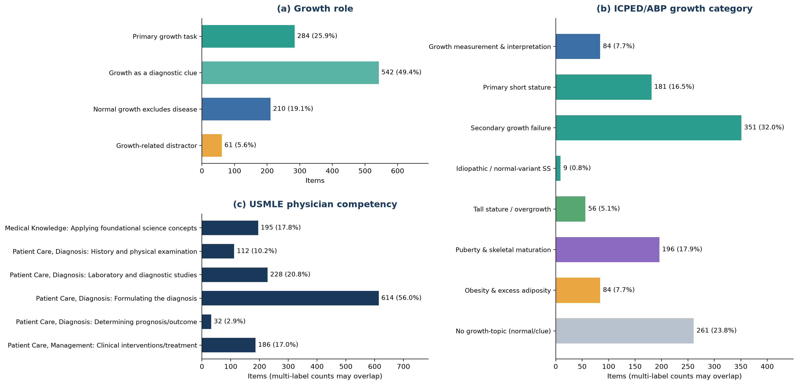

A pediatric growth benchmark
growth-assessment items curated out of public medical QA sets
- skills
- benchmark design · LLM evaluation · annotation schema design · provenance auditing · clinical taxonomy crosswalking
- tools
- data
- MedQA · MedMCQA · MedXpertQA · MMLU medicine · PubMedQA · MedBullets · PediatricsMQA · ICPED / HPO · USMLE competencies
- status
- in progress
question
When a model scores well on medical exams, is it competent at the growth-assessment tasks a clinician would lean on it for?

calls made
- growth relevance defined by whether the answer depends on the growth data, not by whether a height or weight appears in the stem.
- one frozen labeling run over the whole corpus with a blinded stratified human audit, rather than routing only prefilter-positive rows to the stronger classifier. every row gets the same measurement process.
- classifier instructions rewritten around primary subject and question target instead of adding few-shot examples. the failure mode was keyword surface matching, not a shortage of examples.
- labels and item ids released for one source dataset rather than its question text. that source states no license; the others are MIT, Apache or CC BY-SA.
- rare-disease corpora held out of the registry. they pull the benchmark away from the primary-care pediatric setting it is meant to describe.
what broke
- an early version of the vignette trajectories was described as built from the official LMS pipeline but had hand-entered approximations, and some reconstructed curves were not physiologically possible. caught in a claim-by-claim audit of my own design docs.
- the case registry meant to guarantee item provenance was nearly empty, so it never protected the evaluated items.
- a full-corpus batch labeling run failed for a billing reason and had to be replanned around a cheaper route; an earlier queue was built on a corpus that got superseded and could not be resumed.
- one table generator silently overwrites another table's source file, so build order still has to be repaired by hand.
what i tried
a three-level cognitive tier label got cut once it was clear it was a locally coined collapse rather than standard revised Bloom. the USMLE competency crosswalk replaced it.
not shown
- manuscript under review, so no scores or model rankings here